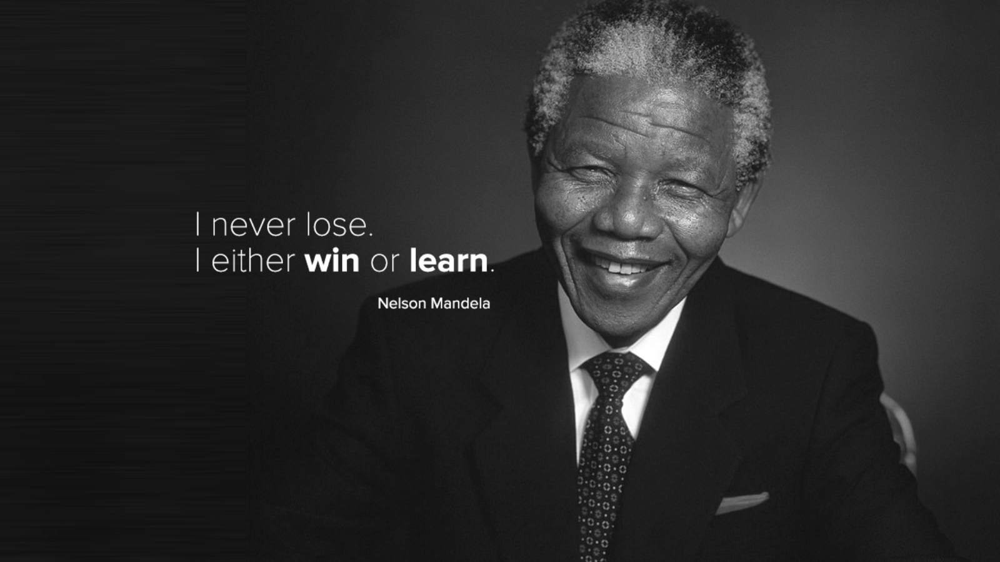

Nelson Mandela
The Man Who Walked the Pathway to Freedom

Nelson Mandela on Winning
The Life of Nelson Mandela
- Universally known as ‘Nelson’ Mandela, this was not his birth name. In his autobiography, The Long Walk to Freedom (1996), Mandela describes how he became known as Nelson: ‘No one in my family had ever attended school […]. On the first day of school my teacher, Miss Mdingane, gave each of us an English name. This was the custom among Africans in those days and was undoubtedly due to the British bias of our education. That day, Miss Mdingane told me that my new name was Nelson. Why this particular name I have no idea.’ Mandela’s birth name, Rolihlahla, means ‘he who shakes the branch of the tree’ or ‘troublemaker’ for short, an appropriate name for one who was destined to overturn a regime and change the direction of the nation.
- Mandela joined the African National Congress (ANC) in 1943, first as an activist, then, together with Oliver Tambo and Walter Sisulu, as a founder and president of the ANC Youth League, becoming its general secretary in 1947.
- He married his first wife, Evelyn Mase, in 1944. They were divorced in 1957 having had three children.
- Mandela qualified as a lawyer and in 1952 set up South Africa’s first black law firm with Oliver Tambo. Mandela and Tambo campaigned against the racially-based system of apartheid and called on the government to repeal all discriminatory legislation or face a ‘Campaign for the Defiance of Unjust Laws’. Mandela travelled the country recruiting volunteers and organising resistance. Rallies and strikes attracted thousands of supporters.
- The Nationalist government reacted by introducing draconian penalties for protests against apartheid. Campaign leaders were banned and thousands of people arrested, including Mandela. The court determined that in view of the disciplined and nonviolent nature of the campaign, Mandela should receive only a suspended sentence, but imposed a banning order confining him to Johannesburg for six months and prohibiting him from attending gatherings. It was during the period of his banning that Mandela formulated a plan called the ‘M-Plan’ to divide ANC branches into underground cells to enable greater contact with the black community.
- In 1956 Mandela, along with Tambo, Sisulu and 153 others, was charged with high treason under the Suppression of Communism Act, a piece of legislation designed as a ‘catch-all’ for all opponents of the regime. After a four-year trial the charges were dropped after it was shown that the ANC did not advocate violence.
- In 1958, Mandela married Winnie Madikizela
- The fight against apartheid escalated when police shot dead 69 black people in the Sharpeville Massacre of 21 March 1960. The ANC was banned and Mandela went underground. Peaceful resistance was replaced with economic sabotage. Mandela became national vice-president of the ANC.
- In 1962 Mandela was arrested for leaving the country illegally. He conducted his own defence, but was convicted in November and jailed for five years with hard labour. While he was in prison the police raided an ANC safe house in Rivonia where they discovered a cache of arms. Mandela, Sisulu and other leaders of the ANC, and its armed wing Umkhonto we Sizwe (MK), were charged with treason. In 1964 the court found them guilty and Mandela and other leaders were sentenced to life in prison.
- Mandela was given the number 46664 (prisoner 466 of 1964), a number that has become a brand, initially for a global HIV/AIDS awareness and prevention campaign, encompassing all areas of Mr Mandela’s humanitarian legacy. Mandela remained incarcerated on Robben Island for 18 years before being transferred to Pollsmoor Prison on the mainland in 1982. During his imprisonment, his wife Winnie was active in calling for his release and was subjected to house arrest and constant police harassment.
- While in prison, Mandela’s reputation grew as the most influential black leader in South Africa. ‘Free Mandela’ became a rallying call as the anti-apartheid movement gathered strength. He refused to compromise his ideological and political stance to secure his release.
- In 1990, while South Africa was under global economic and political pressure to reform its policies, President FW de Klerk announced that Nelson Mandela was to be released and the ban on the ANC lifted.
- In 1992 Mandela divorced his wife Winnie after she was convicted on charges of kidnapping and accessory to assault.
- In December 1993, Mandela and De Klerk were awarded the Nobel Peace Prize.
- Five months later, inclusive democratic elections were held in which the ANC gained 63% of the vote and Mandela was inaugurated as President.
- Turning 80, Mandela married Graça Machel, the widow of the former President of Moçambique. Using his prestige and global reputation, Mandela devoted his five-year tenure as president towards rebuilding the international image of South Africa, while internal affairs were largely left to his deputy Thabo Mbeki.
- After his retirement, his public appearances were mostly connected with the work of the Nelson Mandela Foundation, a charitable fund he founded in August 1999.
- On his eighty-ninth birthday, Mandela and Desmond Tutu formed The Elders, a group of leading world figures who offer guidance to tackle some of the world’s most intractable problems.
- In 2005, Mandela announced that his son Makgatho had died of AIDS and urged South African to de-stigmatise HIV/AIDS and treat it as a normal illness.
- Mandela played a key role in FIFA’s decision to allow South Africa to host the highly successful 2010 football World Cup and appeared at the closing ceremony.
If you have time, you should read more about this incredible human being on his Wikipedia entry.